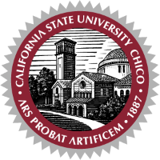

Education
Academic background
Degrees in computer science and computer information systems.
The University of Arizona

Terrence Lim · Computer Science
Academic degrees in computer science and computer information systems.
Degrees in computer science and computer information systems.
